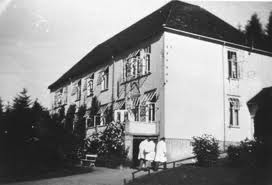

Det helvetes livet i himmelen
Jeg har det bra. Jeg kan til og med si at jeg kanskje aldri har hatt det så bra. Men jeg er ikke bra for det.
Ironien er at når så mye i livet er bra, vil kanskje ikke riktig alt være med på ferden. Snarere tvert imot, dessverre.
Symptomene på det er mange. Mest bare små ting som kanskje ikke betyr så mye, men veien virker enveis og full av snubletråder. Ikke så daglig brysomt ennå, men potensialet er naturligvis dødelig – senere om ikke før.
Ingen ting varer nemlig evig, og særlig ikke livet. Det må vi alle innse – og jeg har innsett det lenge. Jeg vokste opp med sjukdom og noen ganger så alvorlig at dødsgudinna ventet i skyggene bak neste time, neste dag, neste uke, neste… og så videre.
Sjukdommene var mine faste medreisende lenge, lenge. Men plagene i barndommen og gjennom ungdommen hadde merkelig nok også noen gode sider ved seg.
Det ene var at jeg leste bøker. Mange bøker. Veldig mange. Til og med sånne som det vel ikke var meninga at jeg skulle lese – ennå. Det andre og sjølsagte var jo at jeg kjempet og ble frisk. Hver gang. Med god hjelp fra lege Helge Øverland … og kan man egentlig tenke seg noe slikt i dag? En doktor som ikke bare kom på husvisitt, men som satt på sengekanten og kjente på panna med hånda før termometeret ble neste. Så kikket han på det og ristet kanskje litt bekymret på hodet før han skrev ut resept på medisin og hadde noen råd og formanende ord til de voksne…
Et par-tre dager etterpå kunne han komme helt uanmeldt og banke på døra for å se hvordan det gikk, om feberen hadde gått ned og alt var på rett vei.
Hvis jeg ble så sjuk at jeg ikke en gang orket å lese sjøl, så hadde jeg ei mor som mer enn gjerne tok seg tid til det – og hun utviklet til og med en sans for den sorten bøker jeg likte da som varte mye lenger for hennes vedkommende enn det gjorde for meg!
Når jeg tenker på hva unger må igjennom nå når de blir sjuke, så forstår jeg hvor priviligerte vi egentlig var vi som vokste opp på femti- og begynnelsen av sekstitallet. I ei fattigere tid som etter min mening likevel på ganske mange måter var mye rikere enn i dag. Tenk det – legen kom på hjemmebesøk… i dag er det pasienter som pent må kreke seg opp av senga og dra til legen, der de sitter på venterommet sammen med andre sjuklinger og venter på tur.
Likevel er det absolutt ingen grunn til å legge skjul på de mørke sidene ved 1950-tallet, heller ikke i mitt liv. Bolignøden i det sønderbombede Kristiansund var prekær og de såkalte «tyskerbrakkene» var dessverre alt for mange arbeiderfamiliers eneste bomulighet. Kalde, trange og trekkfulle. Men alltids bedre enn «Hoembrakka» innerst i Vågen, der vi bodde fem mennesker på ett rom de første par åra etter at vi kom til Kristiansund fra Smøla. Å komme til to rom og til og med et lite kjøkken i tyskerbrakke måtte antakelig ha virket som et ganske stort framsteg for oss? Jeg husker ærlig talt ikke stort av det.
For dessverre kunne ikke alle sjukdommer kureres av huslegen og familien heller, verken med penicillin eller bekymring og pleie.

Tuberkulosen kom jo og den rammet mange. Også meg. Den sendte meg til Reknes sanatorium i Molde i nesten ett år, men også den ble jeg jo til sist frisk av. Og om ikke annet så flyttet min tuberkulose familien framover i boligkøen, og bort fra brakkene.
Det er minner fra Reknes som en sjelden gang plager meg fremdeles. Ikke så mye om sjukdommen som andre sider ved å være pasient så lenge. Sjukehusets vesen og system var milevidt fra noe jeg hadde opplevd før. Til og med skolen var bare ei mild plage i forhold til både sanatoriesystemet og noen av de menneskene som var dets representanter og tjenere..
På den ene side var vi pasienter jo årsaka til at sjukehuset eksisterte, og grunnen til at det var leger og sjukepleiere der. Men tross det var vi likevel bare «kanonføde» i et autoritært og hierarkisk system, og vi sto aller nederst på rangstigen. Vi som var barn var jo til og med enda mer umyndiggjorte, hjelpeløse og detaljstyrte enn de voksne pasientene.
Skrekken for sjukehus og leger fikk etter dette og andre senere sjukehusopplevelser hos meg nesten fobiske trekk, og jeg greier ikke å overvinne den angsten verken med fornuft eller med den smule ironi som ligger i det at jeg er der nesten hver dag – for å hente Gerd som jo arbeider på sykehuset i Kristiansund!
Jeg skrev jo til slutt Reknes og tuberkulosen og alt som fulgte med den endelig litt ut av meg med Ensomheten er en sang. Ei bok som Gyldendal ironisk nok gav ut som «ungdomsbok» – og jeg sa ja til det enda jeg nok helst ville sagt nei, og til tross for at det på meg rett og slett virket uprofesjonelt av et seriøst forlag å ikke se at dette i all hovedsak var ei bok for voksne lesere…
Kall derfor gjerne det at jeg sa «ja» til utgivelse av manuset mitt som bok for ungdom for feighet, men det var nok heller et resultat av oppsamlet erfaring ervervet gjennom mine mange år som forfatter. Med oppturer og nedturer, og særlig i begynnelsen manuskripter som vandret og vandret og vandret fra forlag til forlag. «Gikk runden», som det heter.
Helt til en forfatter anbefalte meg Bladkompaniet og jeg nærmest hoderistende oppgitt sendte avgårde manuset til Våpensøstrene dit. Ja, for det manuset var også enten dere tror det eller ei innom mange såkalte «seriøse» forlag som alle sa nei, men interessant nok med helt forskjellige begrunnelser! Dere kan jo tolke det som dere vil, jeg tolket det som feighet. Eller kanskje et slags «litterært fremmedhat»? For at innholdet og kanskje også utførelsen var antakelig temmelig «fremmedartet» for forlag som tydeligvis oppfattet bøker som inneholdt noe mer enn forfatterens og hans hovedpersoners daglige lille kamp for annerledes nok til ikke å passe inn i «forlagsprofilen».
En av tilbakemeldingene jeg fikk fra – la oss ganske enkelt si «et større forlag» på manuset var faktisk akkurat det; at det ikke passet inn i deres forlagsprofil. Underforstått da antakelig som « seriøse forlagsprofil»?
Men for meg, og jeg tror for mange av de som har lest amasonebøkene med litt åpnere sinn, vil bøkene neppe kunne sies å være noe som helst annet enn seriøse. Slik var de ment å være, og slik er jeg sikker på at de ble.
Dersom man da ikke med «seriøs» faktisk egentlig mener «udramatisk» i den forstand at bøkene faktisk til tider inneholder konflikter som ikke alltid løses på en fredelig (les: verbal) måte. For å si det på en pen måte.
Hva det førte til at Bladkompaniet utgav ei bok som de sjøl også bemerket egentlig lå et godt stykke unna deres normale litterære nedslagsfelt, se det er en helt annen historie enn den jeg vil skrive om her – men jeg må vel si at det å sende manuset til Våpensøstrene dit var noe av de lureste jeg noen sinne har gjort.
På det forlaget møtte jeg fra første dag ikke noe som helst annet enn respekt, både for det jeg skrev og etterhvert også for hvordan jeg ønsket at bøkene både skulle se ut og bli utgitt som. På sett og vis skjemte de meg antakelig bort.
Bøkene mine som kom ut der var absolutt ikke av den sorten som kunne bli bestselgere i kioskene, og de ble etter litt «prøving og feiling» utgitt med ei utforming og ei innbinding like bra eller bedre enn om de hadde kommet ut hos Gyldendal, Cappelen eller Tiden.
De ble dessuten innkjøpt til bibliotekene og anmeldt i pressa som det de var – seriøs skjønnlitteratur hvis eneste «annerledeshet» jo var at de kom ut på Norges fremste forlag for underholdningslitteratur … Et forlag med en interessant og faktisk ganske variert stall av forfattere som jeg etterhvert skulle bli ganske godt kjent med, og til og med for manges vedkommende kalle mine venner.
Bladkompaniet skulle vise seg å bli et godt sted å være for en forfatter som meg.
Jeg fikk nemlig en total frihet til å skrive om hva jeg ville, og akkurat slik jeg ønsket å gjøre det. Ingen blandet seg særlig opp i hva jeg gjorde, i alle fall ikke på noen bestemmende eller negativ måte, livet som forfatter ble godt og jeg gikk inn i en kreativ og produktiv fase i forfatterskapet som jeg aldri før hadde opplevd.
Amasonebøkene, Kalis sang, Skumringslandet, For at jeg kan ete deg, Natt uten navn og Rød storm ble for eksempel absolutt ikke store salgssuksesser sett med kommersielle Bladkompani-øyne, men reaksjonene fra leserne og til og med de fleste anmeldelsene av bøkene i pressa var derimot egentlig ganske overveldende.
Særlig de fem amasonebøkene syntes å tenne mange, mange, inklusive noen som syntes de var utfordrende nok i forhold til deres tydeligvis temmelig råtne kvinnesyn til at de skrev noen anonyme brev til forfatteren. Brev som uttrykte hat og avsky både for bøkene og for «den jævla idioten» som hadde skrevet dem!
Alt dette er det skrevet mye om allerede,1 så det holder slik. Det måtte bare nevnes. Igjen. For ganske sært er det jo utvilsomt – om man da ikke evner å se den reaksjonære ideologiske logikken i det. Slik jeg jo gjør.
Men som en irritert mann sa til meg en gang på syttitallet:
– Du Knussn, du ser visst ideologi i alt du!
Det må vel innrømmes at han hadde et poeng der. Til og med et viktig et.
Men det er da vel ganske sant også? Er det ikke egentlig ideologi i temmelig mye? Noen kaller det riktignok livssyn, religion, politikk. Men jeg velger altså å se på det som «ideologi». Det settet av ideer, filosofi, religion, som vi i hvilken som helst blanding det måtte passe oss prøver å forklare ganske mye av det vi tenker og det vi gjør med.

Jeg har mye å takke forlagsmenneskene Liv Røsjø Sande, Dag Lønsjø, Frøydis Arnesen og Finn Arnesen for. Uten deres støtte og den totale frihet de gav meg som forfatter, hadde kanskje forfatterskapet slett ikke tatt av på den måten som det gjorde, rent skrivemessig. Jeg ville sannsynligvis aldri blitt den forfatteren jeg ble, aldri skrevet bøker som etterhvert ble betegnet ikke som «fantasy», men som «magisk realisme» – som jo var en mye mer presis og riktig sjangerbetegnelse på mange av de bøkene jeg skrev. Starten ble Kalis sang som kom i 1991. Ei bok som kombinerte det sjølbiografiske med uhemmet fantasi! Deretter kom de som perler på ei snor. Blandingsforholdet mellom det fantastiske og det virkelige varierte såpass mye at noen lesere helst ville se bort fra de «overnaturlige» elementene – skjønt fantasien måtte vel bli ganske vanskelig å velge helt vekk i de fleste av dem?
De fleste hadde også sjølbiografiske trekk. Om enn ikke alle så sterkt som Kalis sang , som ut over de fantastiske elementene jo er temmelig sjølbiografisk.
Men de fleste bøkene mine i «den gata» handler nok mer om det som kunne ha skjedd, eller til og med burde ha hendt, enn det som virkelig hendte. Noen ganger var vel det som var hentet fra virkeligheten omgivelsene, «settinga», mer enn selve hendelsene.
Mannen med steinhodet er kanskje det beste eksemplet på det?
Bladkompaniet forsvant dessverre som sjølstendig forlag vinteren 1999. Det ble slukt og fortært og striglet, kjøpt opp av Schibsted-konsernet, og den eneste av mine bøker som ble gitt ut etter maktovertagelsen var Nekromantiker , som da allerede var antatt til utgivelse.
Etter det fikk jeg en temmelig utvetydig melding om at jeg ikke var en forfatter de ønsket å satse videre på … Jeg hadde rett og slett ingen underholdningsverdi som kunne omsettes i nok penger til å være interessant for de nye makthaverne i forlaget. Jeg kunne ikke protestere på det, det var helt sikkert ei riktig vurdering tatt ut ifra det som i enkelte kretser nok vil sees på som «sunne kapitalistiske prinsipper».
Dersom det ligger en slags lærdom for forfattere og kunstnere som har det samme synet på kunst og litteratur som meg i det, så må det vel bli at kapitalisme og kunst/litteratur er uforenelige størrelser inntil ett eller annet skjer med et verk eller en kunstner som gjør at bildet, boka, musikken, etc. kan gis kommersiell (samle)verdi av årsaker som ligger helt utenfor kontrollen til både skaperen og verket.
Jeg sto altså bare plutselig med hatten i handa igjen og kjente meg nesten som kastet ut på gata og uten litterært husrom noe sted. Det naturlige neste steget syntes – under sterk tvil – å være å sende det manuset jeg arbeidet med til det forlaget som hadde gitt ut den aller første boka mi, nemlig Gyldendal.
Jeg aner ikke stort om hva som skjedde med manuset der.
Enden på den visa ble i alle fall at manuset jeg sendte inn ble foreslått å komme ut som ungdomsbok, og jeg gikk med på det, enda både følelser og fornuft protesterte.
Det valget var faktisk samtidig både tungt og lett. Den fornuftige mannen sa ja, den tvilende forfatteren nei. Hvem som vant den interne diskusjonen vet dere jo allerede, enda det kjentes ikke så bra.
Boka Ensomheten er en sang var nemlig slett ingen «ungdomsbok», den var heller aldri ment som det sjøl om hovedpersonen i den forsåvidt var ung nok.
Boka er jo en ganske sjølbiografisk roman som hentet svært mye av sitt innhold og sine personer fra mitt eget liv, min egen barndom, og mitt ti måneder lange opphold på Reknes Sanatorium i Molde.
Jeg var og er ikke i tvil om at dette er en roman for voksne. Til og med kanskje ei bok for virkelig godt voksne, de som husker både tida og sjukdommen, gjennom egne eller andres erfaringer. For tub’en kjente ingen grenser for hvem den tok – den gikk som en farsott gjennom familiene til både fattig og rik.
Spør dere da hvorfor jeg sa ja til at boka skulle komme ut som «ungdomsbok», enda jeg altså slett ikke ønsket at den skulle komme ut slik, så er svaret både enkelt og vanskelig. Jeg fulgte altså fornuft i stedet for følelser. Det var i alle fall den unnskyldninga jeg brukte …
Jeg kunne også sagt at jeg trengte pengene, og det er også sant, men vi ville nok ha greid oss likevel.
Det riktigste å si er vel at det jeg hadde skrevet var så personlig viktig for meg at jeg rett og slett ikke kunne si nei. Den historia måtte bare ut som bok, samme hvordan.
Og dersom jeg på grunn av det må bli å betrakte nesten som en slags litterær «horekunde» så skal jeg faktisk ikke protestere så veldig på det. Men i så fall tror jeg det rammer mange som er bundet til sine kreative evner (eller tidvis også savnet av dem).
Valget mellom et «kanskje» fra et annet forlag, og et når alt kom til alt akseptabelt tilbud fra det forlaget som jeg tross alt en gang debuterte på balanserte derfor i tankene bare et sekund eller fem før det falt ned på «ja».
Jeg må innrømme at jeg både angrer og ikke angrer på det. På den ene sida kom boka ut, på den andre sida altså slett ikke helt sånn som jeg ønsket.
Sammenlikninga med «behov» er forresten grei nok i det at det jo ligger i enhver kunstners, enhver forfatters drivkraft, at det en har skapt ikke skal gjemmes og glemmes. Det kan umulig noen gang bli så enkelt som å legge manus vekk i ei skuff og etterhvert dermed også etter all sannsynlighet begrave det under andre og flere mer eller mindre likegyldige papirer.
Frykten for et slikt resultat er faktisk sterk, og ikke ubegrunnet, når man vet at mer enn nitti prosent av alle litterære manus som sendes inn til forlag i Norge blir refusert.
Trangen til å se et resultat av alt det strevet man har lagt ned i et slikt manus er sterk. Veldig, veldig sterk. Vanligvis til og med sterk nok til å tåle skuffelser, som å bli refusert og deretter prøve på nytt. Deretter på nytt. Og til og med på nytt igjen.
Sterk nok til å tåle refusjoner som noen ganger inneholder ord som nærmest i all sin liksomsaklighet kjennes som ørefiker, sterkt nok til å ikke gi opp før lenge etter at man egentlig vet at en burde ha gjort det.
Underveis melder naturligvis tvilen seg. Er det min feil? Var det likevel ikke bra nok? Og med det kommer kanskje en enda verre og mer fundamental form for erkjennelse:
Må jeg nå virkelig bøye meg i støvet og finne «trenden» og deretter følge den for i det hele tatt å kunne komme videre som forfatter?
I verste fall setter den tvilen i gang en temmelig håpløs prosess med endringer og rettinger basert på forlagskonsulenters ofte ganske overfladiske vurderinger. Som egentlig forteller langt mindre om dem og meningene deres enn brødsmuler og kanskje til og med litt ost som har forvillet seg inn mellom manussidene.
For mitt vedkommende har resultatet av slike funderinger nok helst endt i et bastant «nei». En knyttet neve mot hele systemet og dets tjenere.
Kanskje fordi jeg er sta, kanskje fordi jeg mener at jeg har «rett», eller i verste fall bare er dum som noen ganger lar relativt ubetydelige uenigheter bli snublesteiner?
Jeg mener ikke med det å si at jeg aldri gir meg på noe, men jeg må bare bli overbevist om at til sjuende og sist ikke bare er det mine avgjørelser, men at det dreier seg om reelle forbedringer eller korrekte rettinger.
Det hjelper naturligvis i sånne tilfeller godt dersom rettingene og forslagene kommer fra folk jeg stoler på og kjenner. Som også vet at mitt «OK» ofte sitter langt inne, men enkelte av dem som har lest mye av meg kjenner jo også min måte å skrive på så utmerket godt at de faktisk av og til nærmest redder det jeg skriver fra meg sjøl!
Det dreier seg jo kanskje bare om i alt tre-fire-fem personer, og jeg kunne godt navngitt dem her, men det er ikke nødvendig.
Lang erfaring med både skriving og med forlag hjelper uansett resultat ganske godt når det gjelder å tåle «systemet». Rett og slett å vite hvordan det hele i all sin vilkårlighet faktisk fungerer.
Særlig det jeg opplevde allerede i min tidligste fase som forfatter, at det konsulenten på ett forlag nærmest slaktet kunne bli rost opp i skyene av konsulenten på et annet forlag, var ei veldig viktig erfaring.
Slik fungerer jo systemet i praksis, rett og slett fordi det er personlige oppfatninger, tolkninger og meninger som til sjuende og sist blir utslagsgivende for hvordan litteratur og kunst vurderes.
«Alle» vet egentlig det, men likevel later man som om det finnes noe som heter litterær og kunstnerisk «objektivitet», ut over de rene praktiske vurderinger av rettskriving og innhold. Men forresten, til og med der er det nødvendigvis og naturligvis et ganske stort rom for skjønn i skjønnlitteratur …(!)
Det som finnes, er altså subjektiv synsing og naturligvis også en relativt objektiv vurdering av språk og innhold. Men faktum er at mange av dem som blir sett på som store forfattere fra tidligere tider, og som skrev i sin tids tradisjon og ut ifra sin tids kulturelle normer, i dag ville fått sine manus blankt avvist.
Enkelte verk som av mange i dag regnes som store klassikere – romaner og noveller – ville i verste fall antakelig ikke en gang blitt lest ferdig av konsulenten …
Mange av f.eks. Bjørnsons mest svulmende dikt og tekster ville vel knapt nok ha kommet på trykk i Romsdals Budstikke !
(På den annen side ville de «gamle guder» i dag temmelig sikkert vært ganske andre forfattere, dersom de i det hele tatt hadde blitt det.)
Hver tid sin litteratur kan man kanskje si, men dersom en tekst virkelig griper dypt nok både sosialt, politisk, litterært og menneskelig vil den nok overleve det meste, dersom den bare får en sjanse til det. En roman som Franz Kafkas Prosessen vil antakelig kunne forbli «tidløs» til langt, langt inn i framtida. Kanskje så lenge som det finnes noen som kan lese den …
Men det kan uansett være verdt å huske på at dersom en roman blir alt for detaljert preget av sin tids rådende kultur, tanker og meninger, så vil det begrense det man kanskje kan kalle dens «holdbarhet» – i alle fall som noe annet enn et mer eller mindre interessant tidsbilde. De bøkene som virkelig greier å bryte «tidsbarrieren», er egentlig færre enn vi ofte tror. Slik sett var vel science fiction kanskje den aller dårligste litteraturen en kunne velge å skrive! Som en klok humorist en gang påpekte: Det er vanskelig å spå, særlig om framtida!
Verken når det gjelder politikk og litteratur har i alle fall ikke jeg greid å spå stort som er rett. At framtida skulle bli så på mange måter banal og navlebeskuende, det kunne vel ingen tro. Tidas fremste ideologiske opposisjon er ikke hentet fra de en gang så fremadstormende ideologiene til sosialister, kommunister og anarkister, ikke basert på verken fornuft eller vitenskap, men tvert om primitiv og banal religiøs tro. Mens litteraturen har krøpet inn i sin egen navle og helt glemt stjernene.
Science fiction i dag verken vil eller kan handle om verdensrommets erobring, eller ikke en gang om Storebrors eneveldige orwellske stat. Kampen om framtida synes derimot akkurat nå å tilhøre presteskapene og kapitalistene, og slett ikke de små «på hjørnet» heller, som den lokale kjøpmannen og den relativt sekulariserte presten fra Den Norske Kirke.
Mer om det orker jeg ikke å skrive akkurat her og nå. Gjør jeg det, ender jeg med å legge meg på sofaen og glo i taket. I håp om å finne fred i takplatenes firkantede, ufarlige enkelhet, i stedet for å tenke på menneskehetens umettelige trang til å tro at det blir lys av å benekte at mørket eksisterer.
Eller for den saks skyld at ordenes kvalitet øker med mengden, heller enn som ganske ofte tvert om.
Etter å ha lest førti-sytti sider i ei bok av en av dem som nå for tiden går for å være ett av de heteste forfatternavn – og som forlaget som gav den ut tydeligvis mente var et mesterverk – har jeg bestemt meg.
Jeg skal absolutt ikke på grunn av tidens skiftende litterære trend forandre min måte å skrive på, ikke følge noen som helst litterær mote, ikke skrive ti sider der to er nok, ikke gjøre noe annet enn det jeg har gjort før. Naturligvis så fremt jeg faktisk en gang i framtida igjen skulle finne på å skrive et nytt romanmanus.
Men det jeg i så fall trenger på forhånd, er i det minste et glimt av håp om at det jeg skriver skal kunne komme ut mellom to permer.
Motelitteraturens diverse store og mediahyllede guruer har alltid hatt noe til felles: Det at mange, mange i den neste generasjon av lesere lurer på hva i helvete alt oppstyret omkring bøkene deres handlet om. Og de kommer sannsynligvis også fram til den riktige konklusjonen: Hype og profitt.
Hadde jeg vært konsulent for forlaget til noen av «geniene», ville jeg foreslått at manuset skulle blitt ubarmhjertig refusert med beskjed om å kutte teksten ned til minst det halve, og også jobbe videre med innholdet til det kanskje til slutt ble en ordentlig roman.
Men antakelig viser vel en slik holdning og mening bare hvor avleggs jeg er blitt?
For meg er det ganske klart at når sånn langhalm er blitt «god litteratur», så vet jeg også at det å ri på akkurat den bølgen er det aller, aller siste jeg vil. For dette blir jeg bare ikke med på! Og jeg tror heller ikke at jeg er den eneste som har den meninga, skal jeg dømme etter hva enkelte av mine forfattervenner sier og skriver.
Beklageligvis fungerer dette jeg skriver her slik at det rammer ikke bare en god del forfattere og deres forlag, men også leserne av navlebeskuelsene. Men det får ikke hjelpe, heller ikke i denne sammenhengen er jeg demokrat, men anarkist. Det betyr for meg at jeg ikke er her for å snakke folk etter kjeften, og bestselgeri er i alle fall absolutt ingen garanti for at jeg skal like noe. Snarere tvert imot.
Demokratisering av begrepet «god litteratur» ville i så fall utvilsomt gå til noen velkjente forfattere som valgte å la sine opus komme «kapittelvis» i serier i stedet for å samle det hele i tunge murblokker.
Hvor ofte har det ikke hendt meg at jeg har kommet over ei bok som aldri har vært nevnt i en eneste bokomtale, aldri har fått verken priser eller så mye som skrapt bunnen på salgsstatistikkene, og som jeg har lest ikke en gang, men flere ganger?
Jeg snakker naturligvis for meg sjøl nå, bare meg sjøl, og det er enhvers rett til å snakke for seg og være uenig. Det er faktisk det man påstår at «demokrati» betyr, i alle fall ideelt. I praksis blir det dessverre heller å følge strømmen, flokken, hvor nå enn den blir forført hen av smarte ledere.
Jeg var en gang (det vil si for et sted mellom tretti og førti år siden) kjent som en «god science fiction-forfatter», og de orda er absolutt ikke mine. NOVA-statuettene mine får holde som underbygging av påstanden. På den annen side får man vel innrømme at det slett ikke var veldig mange av oss norske som skrev slik litteratur.
Øyvind Myhre skrev i sin tid at jeg var «en av Norges to beste science fiction-forfattere». Når jeg tenker tilbake, kjente jeg meg ganske brydd over det utsagnet den gangen, men nå er jeg blitt gammel og har mistet enhver «unnselighet», som det heter på Nordmøre. Jeg gjorde uansett da som jeg gjør nå – jeg prøvde ikke å sleike noen oppetter … ryggen.
Jeg skrev det jeg skrev da og skriver det jeg skriver nå. Enkelt sagt: Det ble som det ble og blir som det blir.
Forskjellen er altså at den gangen var jeg enten dere tror det eller ikke en veldig beskjeden person i forhold til forfatterskapet mitt, men det orker jeg ikke lenger å være.
Det står nok bøker skrevet av meg i bokhylla nå til at jeg slett ikke behøver å være det. Samme hvor mye jeg går i utakt. Til og med i måten å bruke tekstbehandlingssystemer på og hvilke datamaskiner jeg kjøpte?
Jeg skrev så mye på min første datamaskin, BBC Micro B, at jeg ikke får meg til å kaste den … timene foran det skramlende tastaturet og med teksten i hvitt på svart bakgrunn på skjermen ble mange, mange.
Flere hundre noveller og dikt. Jeg førte til og med statistikk – og toppåret for noveller var 1974, året før jeg debuterte i bokform. Da skrev jeg ett hundre og tre noveller. Hvor mange dikt står det ikke, og naturligvis heller ikke hvor mange artikler. Men det var ikke så få det heller.
De fleste av disse siste kom forresten aldri på trykk noe sted – mens novellene med få unntak jo heldigvis kom ut på en eller annen måte. Diktene? Vel, de fleste av dem kan vi like godt forbigå i stillhet. Men de var jo en god og streng skriveskole, fordi man virkelig måtte greie å si mye med ganske få ord.
Slik sett er jeg i alle fall sikret nå – det jeg skriver her havner på nettet dersom jeg, når jeg har lest gjennom det (sikkert litt nølende), bestemmer meg for å dele det med dere. Det vil Hans Trygve nok være behjelpelig med enda en gang, og Thomas vil også lese og sikkert finne noe som han lurer på om jeg mente å skrive slik, heller enn sånn.
Det endelige ordet om kvaliteten har likevel som alltid min partner i liv og gjerning Gerd, som helt fra den spede begynnelsen har vært med på det hele. Og tro meg, uten henne ville det slett ikke vært noen bokskrivende forfatter Ingar Knudtsen i det hele tatt – det er jeg ganske så overbevist om!

Forlagsmenneskene i Gyldendal var vel egentlig ganske snille mot boka Ensomheten er en sang når det kom til stykket. Den fikk både omslag, utforming og baksidetekst som ingen skulle kunne skjemmes over, og jeg fikk et ord med i laget også! Problemet var jo likevel at den havnet i en bås der de leserne jeg mest av alt ønsket å nå ville ha problemer med å finne den – for de leserne jeg skrev aller mest for var jo alle dem som hadde hatt opplevelser som liknet på mine! Og i Norge er det mange av oss.
Tuberkulosen rammet mennesker både direkte og indirekte. Familier ble naturligvis rammet, og tiltakene mot sjukdommen innebar massekontroller. Pirké, røntgenundersøkelser. Frykt og skremsler. Friske mennesker som hadde store vansker med å late som ingen ting, men som aller helst ville vike tilbake i redsel for deg. Ikke noen klem, nei, ikke en gang en håndhilsen. Tuberkulose. På femtitallet fremdeles inntil nylig den sikre død, og hva visste vel vanlige mennesker om medisiner som Pas og Streptomycin, og at man faktisk kunne leve nesten normalt etter å ha fått ei halv lunge eller mer skåret vekk …
En temmelig ukjent og kanskje til og med uforklarlig situasjon for de leserne som altså forlaget valgte å sikte boka imot. Slik sett ble lanseringa av Ensomheten er en sang mest som fisen – den siktet på hælene men traff nesen.
En klar bekreftelse på det var jo at de aller fleste reaksjonene jeg fikk på boka kom fra voksne lesere som hadde gjort det vågsomme kunststykket å kjøpe og lese ei «ungdomsbok»!
Til gjengjeld var disse reaksjonene virkelig positive, nesten overstrømmende. Fra mennesker som enten kjente igjen seg sjøl, eller den tida den beskrev. Kanskje hadde de hatt en slektning som hadde hatt tuberkulose, eller i det minste en nabo. Husket pirképrøvene på skolen, hadde vært på gjennomlysning med røntgen, og så videre.
For den målgruppa forlaget hadde valgt måtte jo boka derimot virke like «rar» som om jeg hadde skrevet om livet på en fremmed planet – og dessuten sjølsagt både mer traurig og langt mindre eventyrlig og spennende enn om det faktisk hadde vært ei science fiction-historie.
Dette uten at jeg dermed skal si ett eneste vondt ord om de som endte opp med å jobbe med boka på forlaget. Tvert imot. Jeg burde egentlig ha dedisert boka til dem – for de gjorde i alle fall nesten det umulige mulig! Inklusive ei absolutt brukbar forside.
Men nå tilbake til dit jeg ville at dette helst skulle handle om. Sjukdom og angst. Angst for å være sjuk, angst for å dø. Et tema likevel naturligvis slett ikke helt revet løs fra det som Ensomheten er en sang tross alt handler om?
Det sies riktignok at alderdom – i motsetning til f.eks. tub – ikke er noen sjukdom, men hvis den ikke er det, så er den i alle fall noen ganger skremmende lik. Ikke at jeg skal klage på verken styrke eller ferdigheter – jeg har kanskje aldri kjent meg i så god fysisk form, aldri vært så dyktig verken med hender eller hode i mye av det jeg gjør som nå.
Men likevel. Alderen er en snikende fiende. En vet jo at hvert klokketikk ubønnhørlig bringer en nærmere en ende – spørsmålet blir bare hvilken slutt det skal bli. Med et skrik, et sukk, ingen av delene, eller begge.
Og i det spørsmålet ligger angsten gjemt. Angsten for smerte, men også for det ukjente. Det uforståelige, ubegripelige i selve tanken på eksistensens opphør? Ens egen eksistens. Som for hvert eneste individ er dets egentlige alt.
Det er likevel heldigvis ingen ting ukjent ved ingenting. Ingenting er ingenting og lar seg ikke definere som noe som helst annet. Til slutt er fortid alt som er tilbake, og en vet til og med dersom en er ærlig nok mot seg sjøl at sporene vil viskes ut etterhvert nesten uansett hva en har gjort i livet. Bli til gamle familiebilder på en vegg, kanskje bli til noen linjer i lokalhistoriske bøker og for mitt vedkommende vil vel i det minste noen av bøkene mine bli bevart i både noen private bokhyller og også i offentlige biblioteker laget spesielt for å ta vare på fortidslevningene av de skrevne ord.
Det tilhører kanskje livets merkverdigheter at en tenker på sitt ettermæle, sjøl om det når en er død egentlig slett ikke lenger betyr noe som helst? Men uansett er den altså der, tanken på hva som historisk sett blir igjen av det en var og det en gjorde når selve livet er borte.
Det er sjølsagt i den sammenhengen ei klar forverring for oss forfattere i det som har skjedd med bøkers levetid siden (omtrent) 1960- og 1970-tallet.
Før kunne vi jo til og med være viss på at normale bibliotek ville ha bøkene i hyllene temmelig lenge, flere tiår faktisk, men slik er det ikke lenger. De lokale bibliotekene er blitt en slags litteraturens «Villa Gjennomtrekk» der bøker lever kortere og kortere. Et annet siste stoppested er jo antikvariatene og til og med de rotete bokhyllene i Gjenbrukshallen her i Kristiansund! Der det dessuten med ujevne mellomrom ryddes opp med hardhendt kasting.
Egentlig ikke en veldig hyggelig tanke det? Men på den annen side, dersom noen virkelig vil gjøre seg et bokkupp så kan de gå dit … Litt morsomt er det jo for meg å treffe på folk som jakter på mine bøker der, og som klager på at de aldri finner noen, sjøl om de har hørt om at den og den boka kanskje kom inn med ett eller annet dødsbo, men antakelig er solgt, for de finner den i alle fall ikke!
En tredje litterær overlevelsesform er naturligvis digitaliserte bokutgaver på nettet – og her skal jeg være forsiktig med å uttale meg. Jeg aner ikke hvilken skjebne de digitaliserte bøkene vil komme til å lide. Hvilket liv, og hvor langt liv de eventuelt kan få. Til det vet jeg for lite, og forstår sikkert også for lite av det hele.
Men det jeg har sett av den digitale kulturelle verden til nå fyller meg ikke nettopp med optimisme. Ting som kan fjernes ved bare noen enkle tastetrykk vil antakelig bli fjernet slik … om enn ikke alt eller av alle.
Framtida for litteraturens overlevelse ligger likevel tross alt antakelig der, men hvordan og hvor lenge slike tekster vil bestå aner jeg altså ikke. Der kan jeg som gammel science fiction-forfatter se mange interessante muligheter, men jeg har vel en slags ekkel følelse av at nettet kan være et sted der det digitaliserte ord både kommer lett og går enda lettere?
Jeg både kan ta feil og vil gjerne ta feil, men det er lettere å være pessimist enn optimist, når en ser flyktigheten i det «digitaliserte menneskes» oppmerksomhetstid, der man jager videre fra tastetrykk til tastetrykk, eller etterhvert nok mer krafsende i vei på en berøringsskjerm, til bokstavelig talt stadig nye og friske overflatiskheter.
Hva som kommer etter det, det vil ikke en gang en sf-forfatter kunne fantasere seg fram til lenger. Vi tok så fantastisk (!) feil om framtida i det vi skrev på seksti- og syttitallet at i alle fall denne forfatteren ikke våger å skrive noe om hva framtida vil bli lenger. Annet enn at hastigheten til både utvikling og innvikling sannsynligvis vil øke enda mer og med den sikkert også en så sterkt forkortet oppmerksomhetstid som blir tvingende nødvendig for å overleve inntrykksflommen.
Vi er nok kommet ganske langt på den veien allerede. Strømmen av informasjon og inntrykk slik den er i ferd med å ta form, kan sammenliknes med den fysiske forflytning av mennesker via biler, fly og lyntog – i forhold til fortidas robåter, seilskuter og hest og kjerre.
En annen ting som også skjer, er at avstanden mellom generasjonenes mentale verdener øker drastisk. Allerede ser man mange eldre og til og med middelaldrende mennesker som er fullstendig prisgitt yngre og teknomoderne menneskers velvilje for å kunne greie seg gjennom hverdagen.
Det er stadig flere koder og «løsninger» man må forstå og kunne for å greie sjøl enkle ting som å betale ei regning eller handle i butikker. Foreløpig snakkes det bare om å fjerne fysiske penger fra vare- og tjenestehandel, men det vil antakelig komme, og det ganske snart.
Når det skjer og det digitale pengesystemet overtar helt vil det komme et skille, en digital og mental mur mellom mennesker som i mange henseender er mye verre enn fortidas klasseskiller. Det vil rett og slett gjøre alle som av en eller annen grunn ikke kan eller vil være med på det digitale (mare)rittet nesten helt ute av stand til å fungere i samfunnet.
Mange er allerede utsatt for svindel og lureri uten i det hele tatt å ane hvordan eller hvorfor, og det er nå. Hvor ille også det kan bli i framtida kan en bare spekulere over.
Det pussige (?) i det hele er at de som raser avgårde på ryggen av det de anser som ei naturlig utvikling i dag på sett og vis fullt og fast synes å tro at de ganske uten problemer skal kunne følge med videre og videre og videre i jaget.
Men slik vil det naturligvis ikke bli. Moderne nå, men steinalder før man vet ordet av det, og for de neste generasjonene vil dagens sjølsikre og oppdaterte mennesker antakelig være like hjelpeløse i forhold til framtidas nåtid som mange i min generasjon allerede er nå.
I heldigste fall vil de ha hjelpere de kan stole på, i motsatt fall blir de ofre som «utviklinga» uten noen nåde vil slenge i grøfta når den raser forbi dem på den digitale motorveien … akkurat slik som de sjøl en gang raste forbi sine eldre. Med den samme litt småflirende blanding av overbærenhet, forakt og medlidenhet.
Som en «en-gang-for-lenge-siden» science fiction-forfatter skal jeg likevel betro dere at få ting er så forbasket usikkert som å spå om framtida. I min tenkte framtid på seksti- og syttitallet hadde vi ikke vendt den teknologiske utviklinga innover mot vår egen navle og områdene omkring annet enn i kanskje noen få triste dystopier. Fortellinger som vi som skrev dem egentlig ikke trodde på, eller kanskje rettere sagt ikke ønsket å tro på. Kanskje skrev vi dem til og med fordi vi mente at vi på den måten skulle kunne avverge ei slik framtid?
Uansett så vi ikke mer enn bruddstykker av det som skulle komme. Mine, Øyvind Myhres, Dag Ove Johansens, Jon Bings og Tor Åge Bringsværds science fiction-noveller og -romaner fra seksti- og syttitallet virker i dag som om de med få unntak beskriver ei totalt annerledes framtid enn den som kom.
På de fleste måter synes jeg nå at sjøl dystopiene våre var mer interessante enn den nåtida vi er i ferd med å møte.
På den annen side skal en ikke glemme den kinesiske forbannelsen: «Gid du må leve i interessante tider.»
Problemet for meg med det er jo bare at jeg synes de interessante tidene vi lever i nå, er så forbasket uinteressante.
Den digitaliserte teknologien man både rømmer fra hverdagen med og skaper den med er jo når alt kommer til alt i stor grad løsninger på problemer som den teknologiske og digitale levekårsindustrien sjøl skaper og gjenskaper igjen og igjen.
Utviklinga stanser ikke, vet ikke hvordan den skal kunne stanse, drives framover av sin egen trang til å videreutvikle seg sjøl. Dens mening er sin egen mening, uavhengig av menneskene som både skaper og konsumerer den.
Den etterhvert så godt som verdensomspennende og seirende digitalkapitalismens logikk2 drives dermed framover av sin egen ubønnhørlige og egentlig menneskelig sett meningsløse dynamikk: Det som var moderne og fantastisk i går må bli håpløst og gammeldags allerede i morgen eller i alle fall om ei uke, senest en måned, men snakk ikke om år!
Alt annet er det rett og slett for lite profitt i. Utviklinga konsumerer ideer med digital hastighet men naturligvis etter kjente kapitalistiske retningslinjer: Fra moderne til umoderne på en måte som verden aldri før har sett maken til.
Det pussige i det hele er jo at det nå er Kinas sosialistiske kapitalisme som viser seg å være aller mest effektiv og dessverre også menneskelig sett mest ubarmhjertig i kampen om framtida.
Teknologigigantenes kapitalistiske budskap og metode har mye til felles med religion, samme hvordan og av hvem den blir styrt.
Ideologi og praksis griper tett inn i hverandre og målet som man forespeiles ligger alltid «foran», og man tar det aldri igjen sjøl om det i noen øyeblikk kan virke som man har greid det og er kommet på høyde med det.
Slik blir teknologi og programvare modeller for mennesketlivet og ikke omvendt. Nyhet, utilfredshet, oppdatering, framgang, tilfredshet. Deretter gjentagelse, gjentagelse, gjentagelse … Det som gjelder for konsumenter gjelder naturligvis også for produsenter og distributører. For dem er kanskje budene enda hardere. Kan man ikke følge med på rittet eller faller av er man ferdig. Nyheten fra i dag er gammel allerede i morgen, eller i alle fall helt sikkert neste uke.
Og hvem vil vel være gammel? Ops. Jeg vil. Så langt har det jeg har opplevd som «alderdom» vært mye snillere enn det jeg opplevde både som ung og som middelaldrende. Skjønt, jeg vet jo at det ikke kan vare evig. Sannsynligvis ikke en gang lenge. Jeg fikk forresten min første alderspensjon i dag. Det var en gang et rettferdig system som gav like mye til alle, i dag er sjøl den blitt brutalt klassedelt.
Til helvete med det også, jeg har det bra nok og skal nyte øyeblikkene mens jeg har dem, uten å bry meg med å bli særlig oppdatert i noe som helst annet enn det som er absolutt nødvendig.

Som ateist tror jeg ikke på noen annen slutt enn den jeg vil få på gravstedet. Vi har ett liv, og det jeg har hatt – og har! – er egentlig temmelig fantastisk!
Jeg kjenner ikke noe som helst behov for å tro på et liv etterpå, ikke noe annet paradis enn det jeg har opplevd i livets beste øyeblikk, sammen med det mennesket jeg elsker høyere enn noen forfatterord kan greie å beskrive: Min livsledsagerske helt siden året 1963. Min Gerd .
Det nærmeste jeg er kommet og kommer himmelen i praksis er nok gjennom det jeg har sett i teleskopet. Hvis jeg da ikke skal regne med fly- og fjellturer?
En «himmel» i form av et liv etter døden får jeg inderlig håpe at jeg slipper. «Evig liv» høres ut som et særdeles dårlig og skremmende prosjekt.
Det fine teleskopet mitt med titommers speil og motor som fulgte jordrotasjonen og som en gang ikke bare var i flittig bruk, men som også var en viktig inspirasjonskilde til mange av science fiction-novellene mine, er sørgelig forvist til loftet, og det stakkars speilet ser ut som om noen har sølt melk på det.
En gang åpnet det bokstavelig talt himmelen for meg. En natthimmel til inspirasjon og glede. Mars og Jupiter og Saturn i teleskopet ble til noveller og romaner.
Men alt teleskopet kan gi meg nå, er gode minner og en smule vemod og smerte over å se det slik som det er blitt.
Heldigvis behøver jeg jo ikke noe teleskop for å betrakte vår egen klode Jorda. En verden styrt av den merkelige arten Mennesket. Slitt til vanvidd imellom tankens evighet og kroppens forgjengelighet. Fulle av sjølmotsigelser er vi, og kanskje også uten særlig mye ekte håp. Mareridd som vi blir av både Dødens fortærende enkelhet og av imamers og profeters desperate og fanatiske tro på den guden de finner i gamle bøker. Bøker og skrifter fra den tida da Jorda var flat men tankene himmelske, og døden var vanskelig å tro på, til tross for at man så den over alt.
Eller kanskje nettopp derfor. Akkurat det måtte bare bli en virkelighet som man måtte protestere på var virkelig.
Dersom vitenskap og rasjonelle ideologier som humanisme, kommunisme og anarkisme en gang gav et slags håp for menneskeheten, synes det håpet nå i våre mørkeste stunder å bare være en del av historia, av fortida heller enn av framtida.
Likevel kan jeg bare ikke greie å tro at disse tankene kan dø uten motstand – historias pendel svinger, og svinger, og svinger. «It’s only rock and roll» og Linux, men det er da mye både bevisst og ubevisst kommunisme og anarkisme i begge deler!
For min egen del har jeg i alle fall ikke særlig mye anger over det jeg har gjort på kloden jeg lever på. Ikke en gang anger over det jeg ikke har fått gjort.
Tiden er jo både venn og fiende – noen ganger er det som om man uten vansker kan fylle hvert eneste sekund, minutt, time og dag med mening, med samvær og med arbeid. Andre ganger er tida som ei tåke som man går seg vill i og ikke finner noen vei ut av mens timene og dagene bare synes å bevege seg klokketikk etter klokketikk mot evighetens ingenting.
Skal man skremmes av det? Ergre seg over alt som ennå er ugjort? Nei, jeg tror ikke det. Det er faktisk ingen grunn til å la framtida bli en tenkt plage. Da vil jeg heller unne meg en god følelse etter å ha skrevet så mye og gjort så mye at jeg kan tillate meg den luksus å ta resten som det kommer.
Kanskje bør man prøve å se både tilbake og framover. Ganske enkelt slå fast at det ble som det ble, og det er som det er, og det blir som det blir!
… Og dersom noen opplevde dette som jeg skrev her som «langhalm», så hoppet de forhåpentligvis av når de ble lei. Men mange takk da til dere som fulgte med helt til siste punktum.
Fotnoter:
- Les mer om amasoner og kvinnemakt på disse to sidene: forfatter.net/knudtsen/amasonene/amasonene.shtml forfatter.net/knudtsen/artikler/2010/kvinnemakt.shtml | ↩
- Du finner en egen artikkel om kapitalisme og kontroll her: http://forfatter.net/knudtsen/artikler/2004/detsunnekaos.shtml | ↩